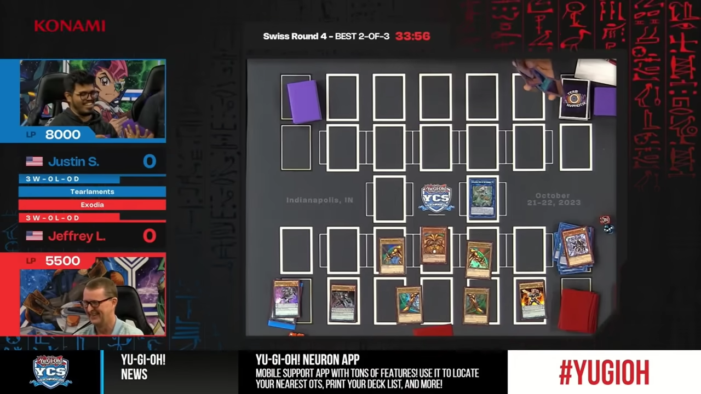

Future and Conclusions
The future of this proposal would be the ability for the agent to play different kinds of games beyond simple chess, the idea being that you can use the agent for a multitude of different games, so long as there is a defined space or board. One such game is Catan, a game with a board and pieces more complex than that of chess, yet there is a defined playspace to which computer vision can be used to identify and process. Another possible game to look at are trading card games, such as Magic the Gathering. Such games have a standardized card dimensions and formatting along with a defined areas to organize cards in during gameplay. [5] There has been research done involving humans interacting with machines in playing games that go beyond games such as chess, which in turn show the viability of such interactions, demonstrating that they are just as engaging as human-to-human games. While the idea of having a computer play a game, such as chess, with a human opponent in a physical isn’t anything too novel, the idea here would be to essentially replicate that experience without having the need for any complicated machines or just resigning to playing games digitally, but rather using one’s own mobile device.
